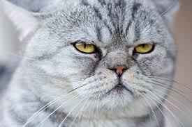
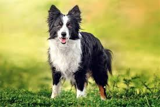
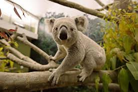

I had no idea so this a random website with animals.
Animals are multicellular, eukaryotic organisms in the biological kingdom Animalia . With few exceptions, animals consume organic material, breathe oxygen, have myocytes and are able to move, can reproduce sexually, and grow from a hollow sphere of cells, the blastula, during embryonic development. Animals form a clade, meaning that they arose from a single common ancestor.
The cat (Felis catus), also referred to as domestic cat or house cat, is a small domesticated carnivorous mammal. It is the only domesticated species of the family Felidae. Advances in archaeology and genetics have shown that the domestication of the cat occurred in the Near East around 7500 BC.
The dog (Canis familiaris or Canis lupus familiaris) is a domesticated descendant of the wolf. Also called the domestic dog, it was domesticated from an extinct population of wolves during the Late Pleistocene, over 14,000 years ago by hunter-gatherers, prior to the development of agriculture.
Le koala (Phascolarctos cinereus), appelé aussi Paresseux australien, est une espèce de marsupiaux arboricoles herbivores, endémique d'Australie et le seul représentant encore vivant de la famille des Phascolarctidés. On le trouve dans les régions côtières de l'Australie-Méridionale et orientale.
Contact our association with the information below